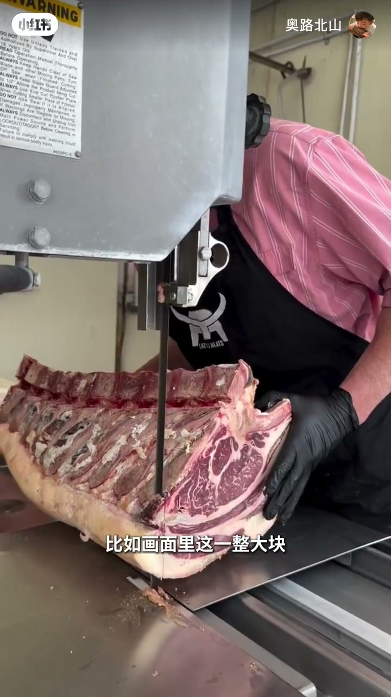
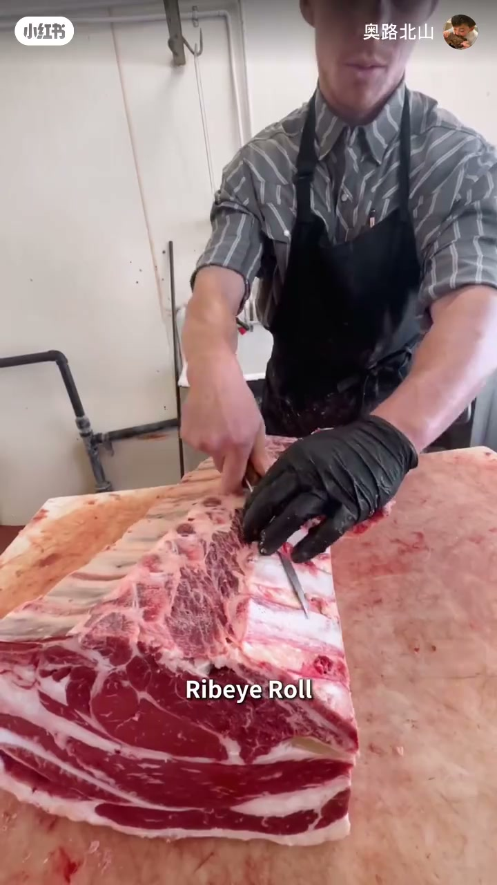
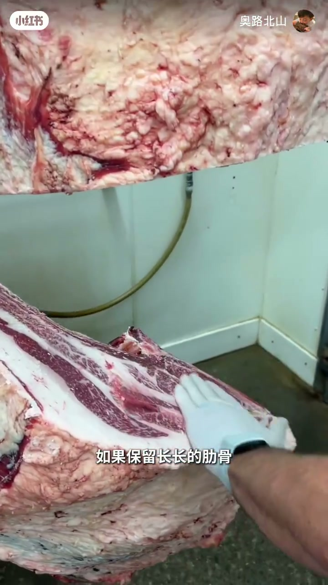
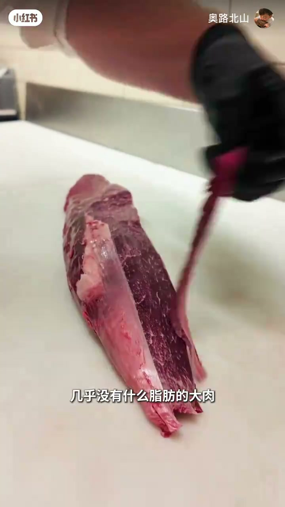
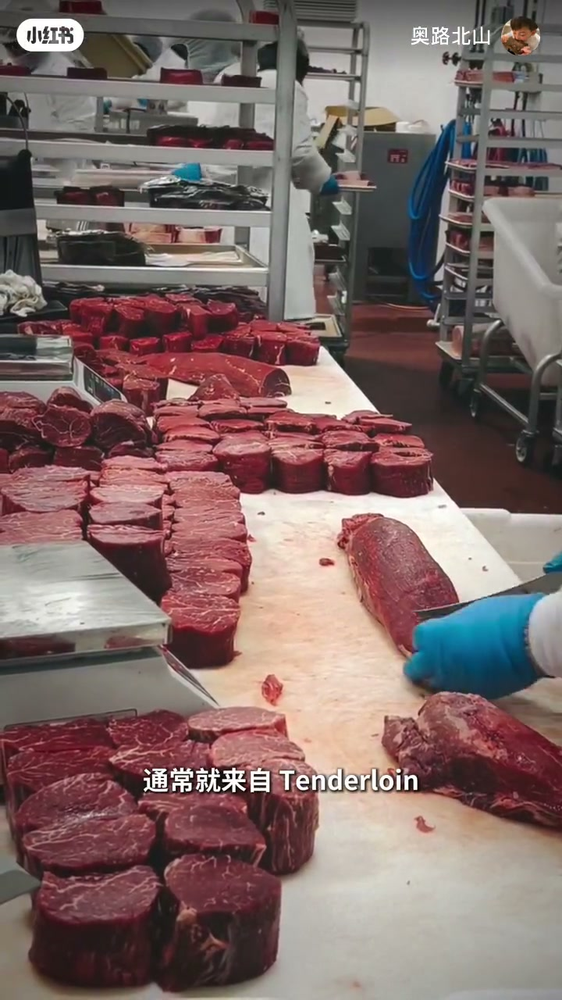
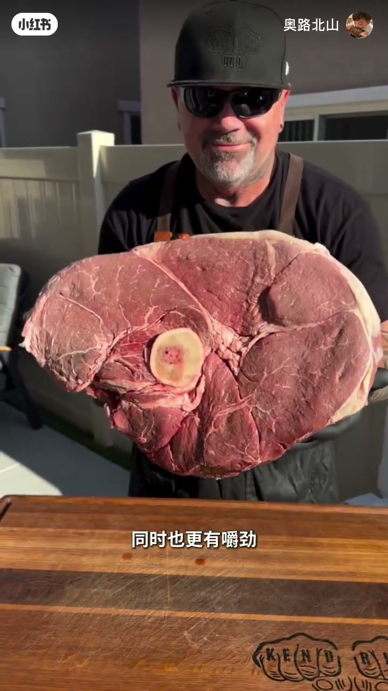

内容要点
「奥路北山」用屠宰台实拍，把牛排店里的肉眼、战斧、菲力还原成牛身上的肌肉地图：肋脊 → 肋眼卷 → 横切肉眼 / 留骨战斧；脊柱内侧腰大肌 → 牛里脊 → 菲力；后腿 Beef Round 则更瘦更有嚼劲。口播对照 USDA/IMPS 名目，便于看懂菜单差价从哪来。
知识结构
肉眼/战斧先不是「菜名」，而是 Beef Rib 上的肌肉地图；修整得 Rib Eye Roll。
含背最长肌与珍贵肉眼盖 Spinalis；横切=肉眼，留长肋=战斧，同属带骨肋眼体系。
Tenderloin 负荷小、结缔组织少，优势是嫩；中段厚片即菲力体系。
Beef Round 多用、脂肪少、纤维粗，与肉眼里脊逻辑完全不同。
菜单上的肉眼/战斧/菲力是同一套解剖学切割的不同终点：同区不同骨（肉眼 vs 战斧），或不同区不同运动负荷（里脊嫩 vs 后腿韧）。
00:00-00:57从肋脊到肉眼与战斧
开场强调：牛排店里看起来完全不同的肉眼、战斧、菲力，在屠夫眼里首先是牛身上的肌肉地图。画面大块肋脊 Beef Rib 上带锯开料，再修脂得 Rib Eye Roll（肋眼卷）。
按 USDA 标准，这里既有背最长肌，也有外侧珍贵的 Spinalis dorsi（肉眼盖）。直接横切即 Rib Eye Steak；若保留长肋骨，则是视觉冲击强的 Tomahawk——本质仍是带骨肋眼，IMPS 亦有对应规格。



00:57-02:11里脊菲力 vs 后腿圆肉
画面切到几乎无脂的细长大肉：Beef Tenderloin（牛里脊），核心是腰大肌，藏在脊柱内侧，运动负荷小，结缔组织少，最大优势是嫩。中段均匀部分切厚圆片，即西餐菲力体系（口播北美名有 ASR 误差，宜作 tenderloin/filet 理解）。
最后「像牛排地毯」的大块来自后腿 Beef Round：臀与大腿多组大肌因日常站立行走更常用，脂肪更少、纤维更粗，和肉眼里脊不是一路货。收尾暗示：看懂地图比死记几十个菜名更有用。



完整转录（52段）
以下文本由 Whisper medium 模型自动转录，可能存在少量识别误差，已尽可能修正。
你在牛排店看到的肉眼
战斧和飞力看起来完全不同
但在屠夫眼里他们首先不是牛排
而是一张牛身上的肌肉地图
比如画面里这一整大块
就是牛的肋脊区域
Beef Rib
屠夫先用代句把骨骼分开
再修掉多余脂 darüber和组织
最终就能得到最重要的部分之一
Rib Eye Roll
也就是肋眼卷
按照USDA的分割标准
这里面不只有眼肉中心的背
最长肌Longissimus dorsi
还包含外侧非常珍贵的Spinalis dorsi
也就是我们常说的肉眼盖
把它直接横切
就是我们熟悉的Rib Eye Steak
肉眼牛排
如果保留长长的肋骨
就能进一步做成视觉冲击力很强的
Tomahawk Steak
战斧牛排
所以战斧并不是一种全新的牛排
本质上仍属于带骨的肋眼体系
USDA的IMPS标准中
也明确把保留完整肋骨的这种规格
称为Tomahawk Steak
而画面里这条细长
几乎没有什么脂肪的大肉
则完全是另一套逻辑
它是Beef Tenderloin
牛里脊
核心肌肉是腰大肌
它藏在脊柱内侧
承担的运动负荷很小
所以节地组织少
最大的优势不是油脂
而是嫩
把中间均匀的部分切成厚圆片
就是高级西餐里常见的肥立体系
北美语境里的Felet Minyak
通常就来自Tenderloin
最后这块大的像牛排地毯的
就来自牛的后腿部位Beef Round
这里集中了臀部和大腿周围
多组大型肌肉
因为牛日常站立和行走都会频繁使用
所以它和肉眼里脊完全不同
脂肪更少
肌肉纤维更粗